Caso de estudio
yo.contenido
Proyecto curatorial
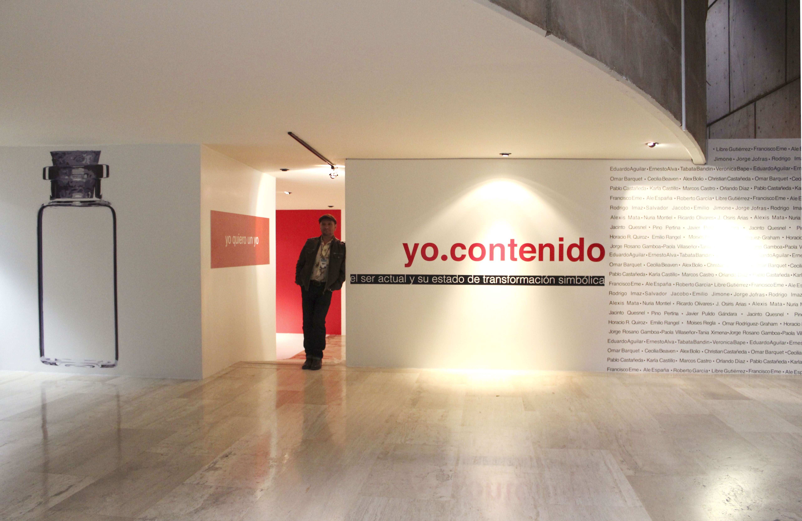
Descripción breve
Responsable de la identidad visual para la exposición colectiva yo.contenido, presentada en el marco del Festival Entijuanarte en Tijuana. El proyecto integró el trabajo de 33 artistas nacionales bajo una narrativa curatorial sobre la relación del individuo con su entorno en el contexto actual de México. La labor abarcó desde el desarrollo del sistema gráfico hasta la supervisión técnica de la instalación en sala.
Desafío
Articular una identidad visual coherente y una experiencia museográfica que lograra unificar la diversidad de obra de 33 artistas diferentes. El reto radicó en trasladar un concepto curatorial complejo —el "yo" frente al entorno— a un lenguaje visual claro y funcional, garantizando que tanto la señalética, los textos curatoriales como los materiales de difusión comunicaran eficazmente la propuesta temática dentro de la dinámica de un festival masivo.
Proceso
Desarrollo de Identidad: Creación del sistema visual y materiales editoriales que dieron cohesión a la exposición, incluyendo gráfica de sala, cédulas y materiales de difusión digital e impresa.
Diseño Museográfico: Colaboración directa con el equipo de curaduría para el sembrado de obra y la implementación visual dentro del recinto, asegurando que la narrativa gráfica guiara al visitante.
Comunicación Interna y Difusión: Desarrollo de activos institucionales (papelería, banners, postales) para fortalecer la imagen profesional del proyecto.
Supervisión de Instalación: Coordinación técnica en el recinto para la correcta ejecución de los elementos visuales en el espacio expositivo.
Resultados
Ejecución impecable: Se completó el desarrollo e implementación visual dentro de los tiempos establecidos, cumpliendo con la exigencia logística del festival.
Satisfacción del Cliente/Stakeholders: La propuesta visual y la museografía fueron recibidas con alto nivel de satisfacción por parte del equipo organizador del Festival Entijuanarte, validando la calidad del diseño y la capacidad de gestión del proyecto.
Cohesión Narrativa: Se logró una unificación visual exitosa para los 33 artistas participantes, permitiendo que la narrativa curatorial fuera legible y atractiva.
Habilidades
Galería
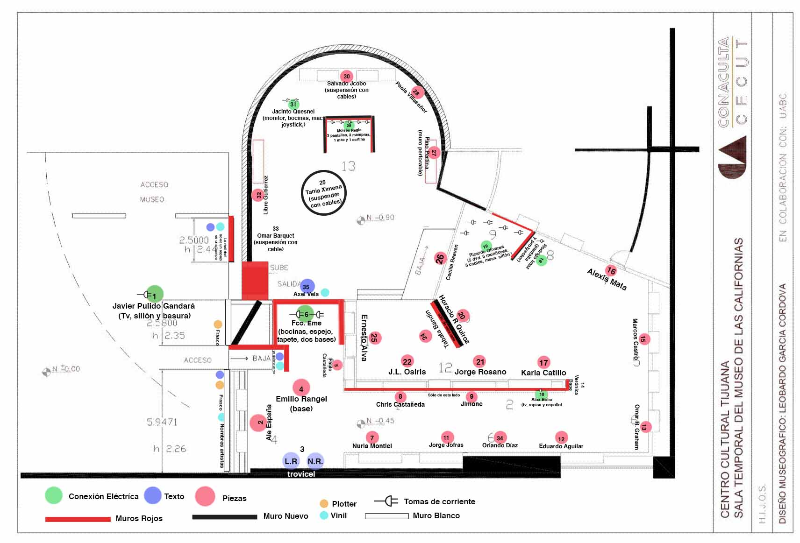

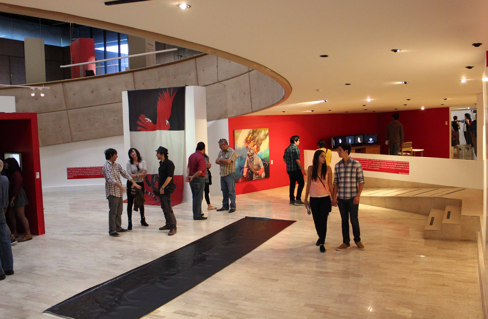
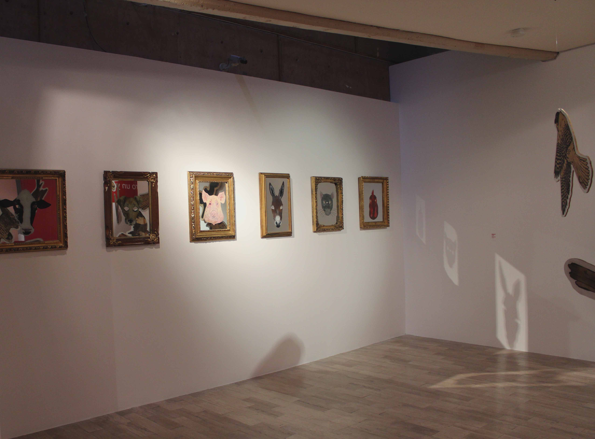
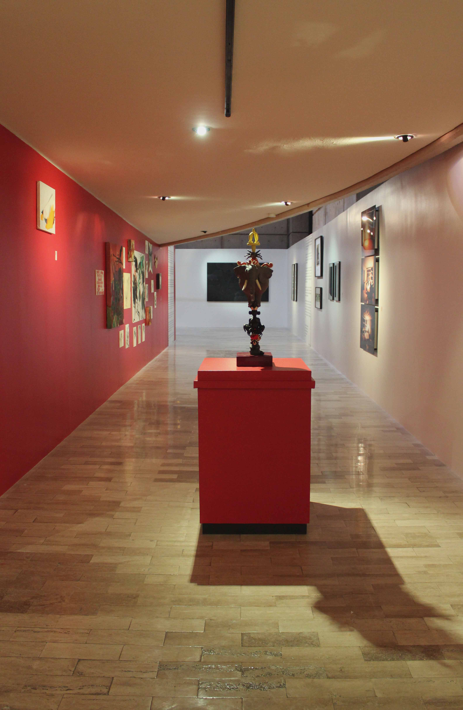
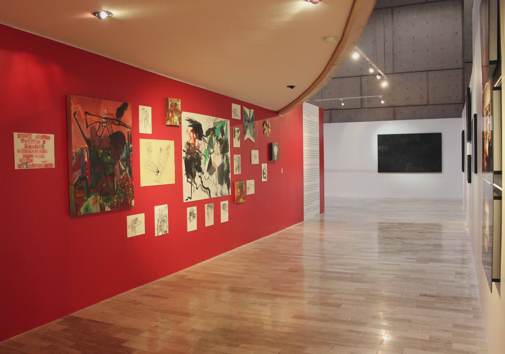
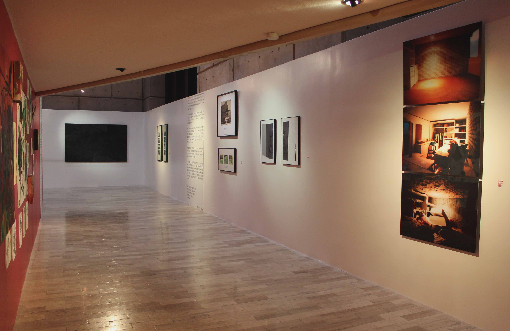
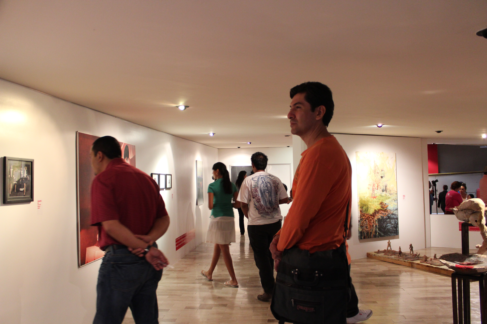
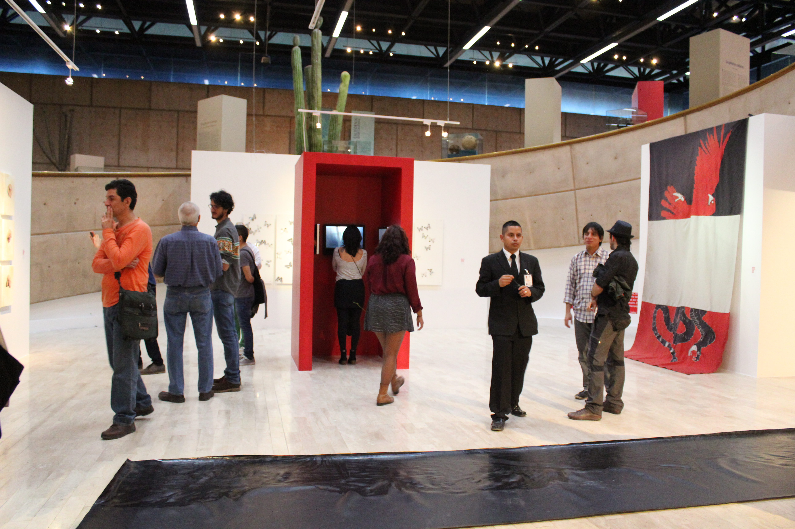
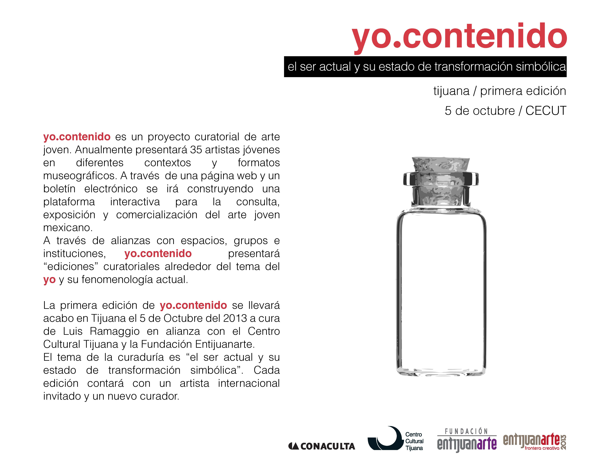
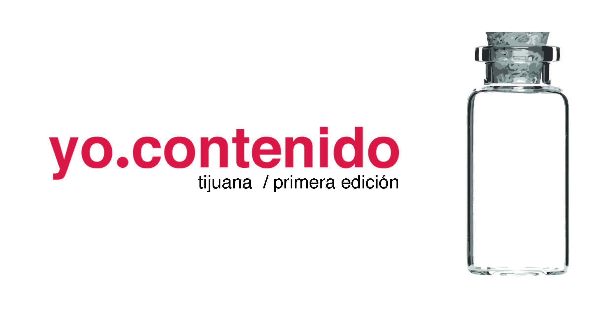
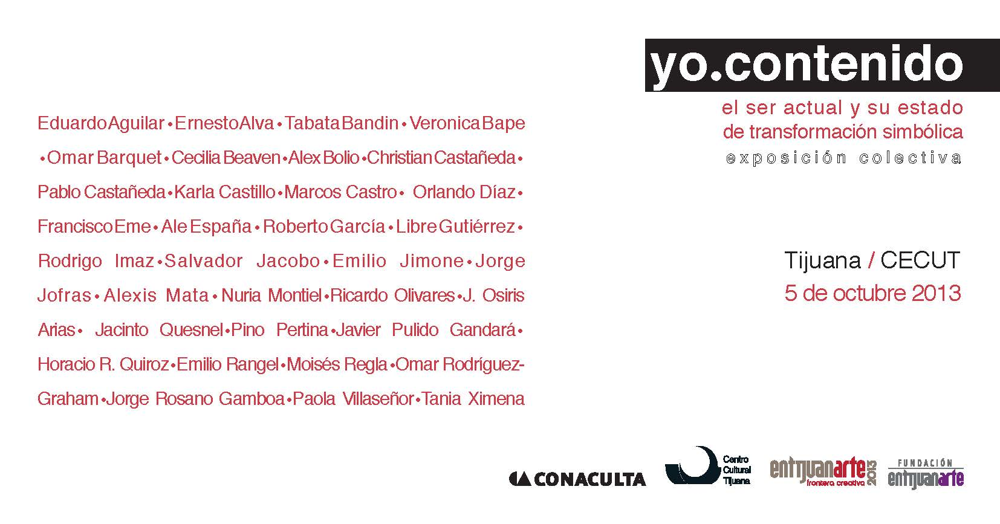
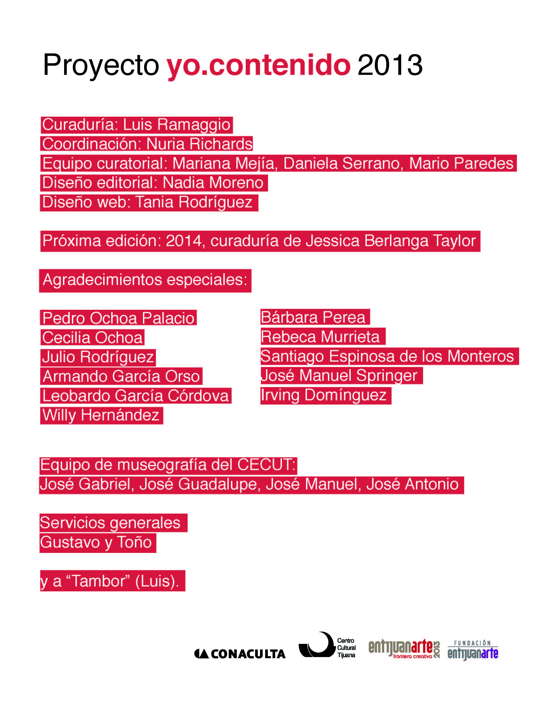
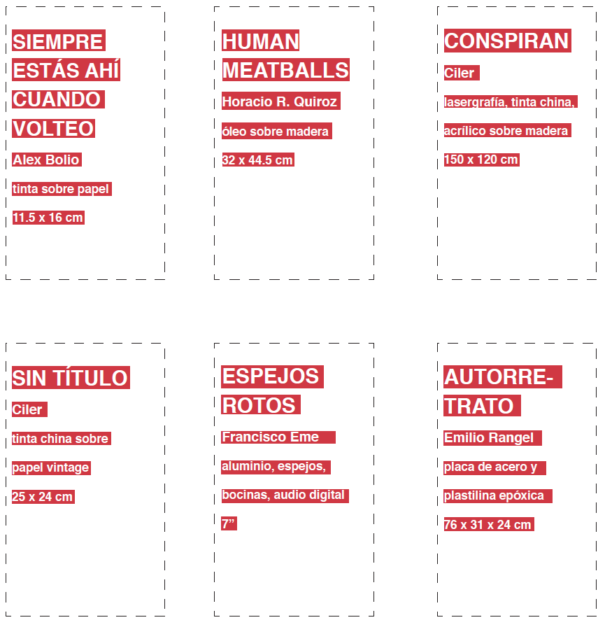